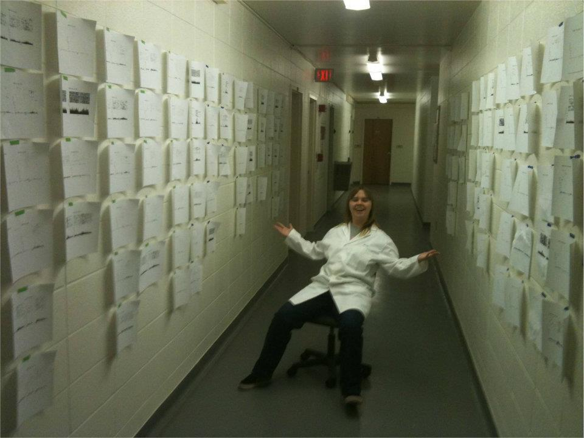
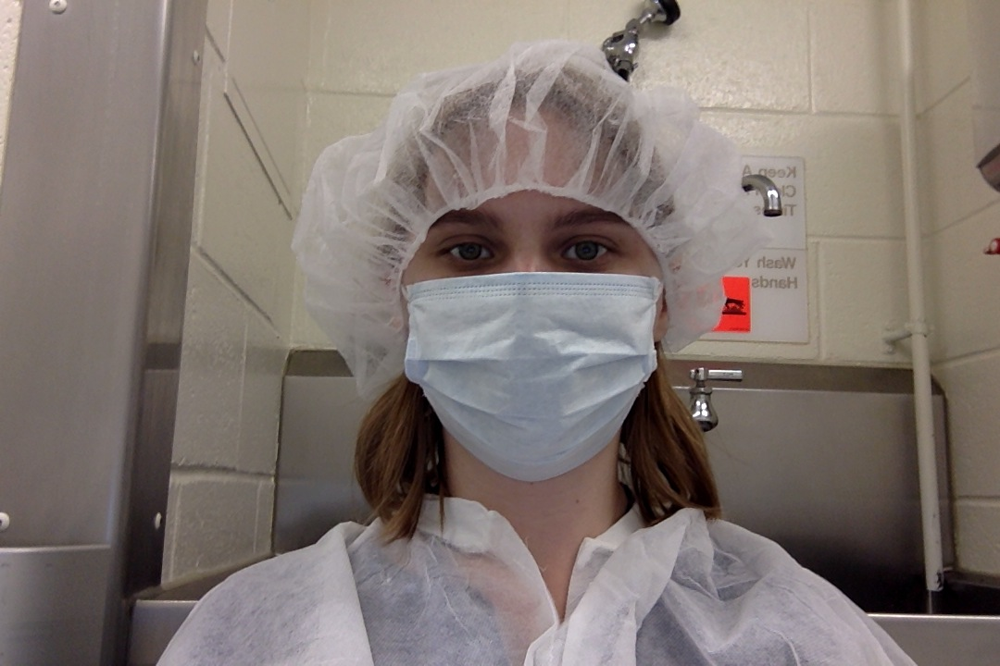
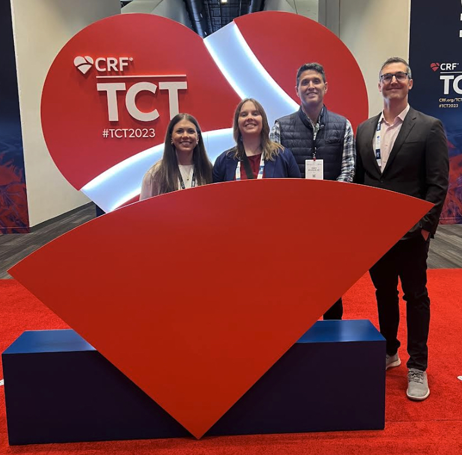

An interdisciplinary adventure

My journey with data began as a neuroscientist. I completed my Ph.D. in an interdisciplinary department that bridged biology, psychology, and philosophy. This is where I first discovered the power of data, statistics, and the art of using numbers to uncover insights.
I studied how the brain processes the relative value of rewards by recording from neurons in live, behaving animals. Using 16-channel recordings at 40,000 samples per second, I generated vast amounts of data. Some of this was signal and much of it was noise. The challenge of extracting meaning fascinated me. I taught myself Matlab to separate signal (neural firing) from noise using principal component analysis. I then carried out extensive statistical analyses that revealed important insights into how the brain compares rewards (Webber et al., 2016).

Excited by the interdisciplinary nature of my graduate work, I pursued an interdisciplinary Postdoctoral Fellowship at the National Institute of Diabetes and Digestive and Kidney Diseases (NIDDK) at the NIH. There, I studied how the brain generates the feeling of hunger. It was an extraordinary opportunity where I learned cutting-edge techniques, including optogenetics, which uses light to turn neurons on and off.
While at the NIH, I realized that my favorite part of research was working with data. When my fellowship ended, I decided to fully pivot into data science.
Switching fields was daunting, but I soon found an exciting role as Assistant Director of Analytics at the OHSU Foundation. The Foundation was just beginning to apply analytics to philanthropy and needed someone with statistical and modeling expertise to build out the program. I embraced the challenge and helped raise funds for biomedical research. This included supporting work that aimed to end cancer, HIV/AIDS, blindness, and neurodegenerative diseases.
 =
=
This experience showed me the transformational potential of machine learning. I wanted to dedicate my career to helping others use these tools for impact, which led me to DataRobot, an automated machine learning platform designed to make advanced ML accessible.
At DataRobot, I learned more than I had during my entire postdoc. I worked with some of the world’s top data scientists on urgent, real-world problems. Most notably, I supported the U.S. Department of Health and Human Services during the COVID-19 response, which spanned two White House administrations.
One project I am especially proud of was creating a COVID test exchange program. Using a simple Google Form and R scripts scheduled as cron jobs, I built a system that matched organizations with surplus tests to those in need. The exchange distributed more than 1,000,000 tests, which showed how simple data-driven solutions can make a major difference.

After COVID, I wanted to return to my roots in human health and joined Truveta as Director of Life Science Research Analytics. I built a high-performing analytics team that supported life science customers in leveraging EHR data for their research. Following that success, I launched a second team focused on strategic accounts and enterprise partnerships in my current role as Director of Research Enablement and Development. In this capacity, I help clients scale the use of EHR data to power their studies and discoveries. I focus on scaling enablement to all customers with monthly webinars, tutorials, onboardings and workshops.
Truveta is unique in that it is owned and governed by the health systems that contribute to its massive, timely, and representative EHR dataset. Each day, I have the privilege of working with this extraordinary resource and an outstanding team to shed light on what is happening with human health in the United States. I feel fortunate to contribute to this mission and look forward to making an impact for many years to come.